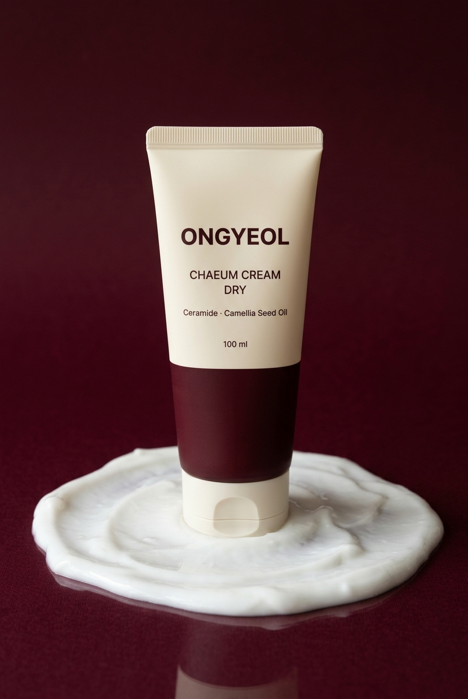

ONGYEOL · 가을 출시 듀오
온결 채움 듀오 DRY
채움 크림 DRY 100ml + 채움 토너 DRY 150ml
55,000원
증정 · 토너 30ml 미니 스프레이 + 크림 10ml 미니

밤에 바르면
아침까지 안 당기는
마르지 않게, 무너지지 않게
※ '아침까지 안 당기는' 사용감은 출시 전 사용감 평가로 확인한 범위에서만 표기합니다. (가상 시나리오)
이런 피부라면
- 세안하고 몇 분 지나면 얼굴이 당긴다
- 오후가 되면 볼에 각질이 일어난다
- 크림을 두 번 발라도 아침이면 다시 건조하다
채우고, 잠그는 장벽
채움물층의 수분이
각질층을 촉촉하게
각질층을 촉촉하게
잠금동백 씨오일이
얇은 막으로 마무리
얇은 막으로 마무리

바를 때는 수분감, 마무리는 얇은 막 — 두 단계로 바뀌는 텍스처
두 가지를 함께 측정합니다
각질층 수분량채움 — 수분이 얼마나 머무는가수치는 시험 후 공개
경피수분손실(TEWL)잠금 — 수분이 얼마나 덜 빠져나가는가수치는 시험 후 공개
측정 예정 지표 · 시험기관 / 기간 / 대상 / 인원은 시험 후 각주로 표기합니다. (가상 시나리오)
대표 원료

동백 씨오일
꽃이 아니라 씨앗에서 얻은 오일로, 수분을 채운 뒤 얇게 잠그는 역할을 맡습니다. 세라마이드와 함께 크림의 마무리감을 만듭니다.

사용법
- 토너 물층과 오일층이 잘 섞이도록 흔든 뒤, 눈을 감고 10~20cm 거리에서 얼굴 전체에 두세 번 뿌려 주세요.
- 크림 적당량을 덜어 얼굴 전체에 펴 바른 뒤 가볍게 감싸 주세요.
수분은 부족한데 번들거린다면
번들거림이 신경 쓰이는 날엔 조금 더 멀리서 가볍게, 당김이 남는 곳엔 한 번 더 뿌려 보세요.
제품 정보
| 구성 | 채움 크림 DRY 100ml · 채움 토너 DRY 150ml (2층 미스트 토너) |
|---|---|
| 주요 성분 | 세라마이드, 동백 씨오일(토너 오일층 약 5%) |
| 용기 | 크림: 불투명 튜브 / 토너: 반투명 PET + 미세분사 펌프 + 오버캡 |
| 리필 | 토너 리필 파우치 150ml 18,400원 (자사몰) |
| 전성분 · 고시 | 가상 처방으로 미정 (가상 시나리오) |